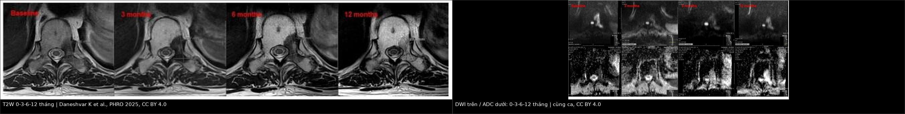
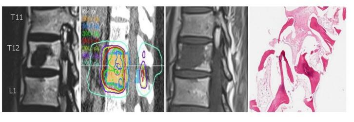
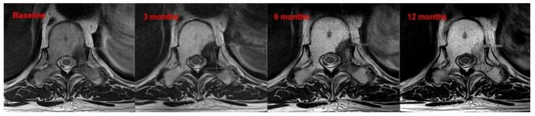
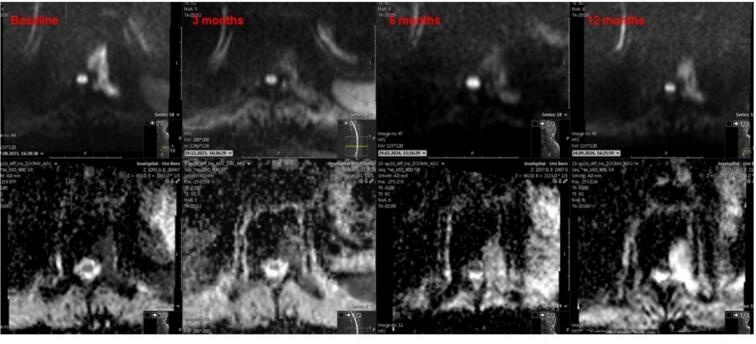
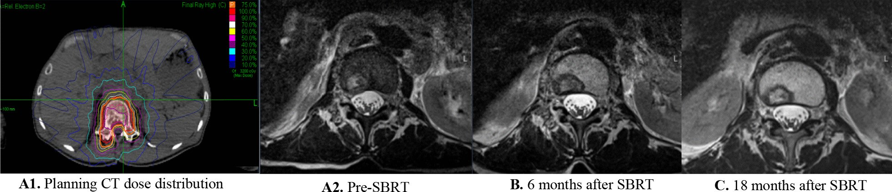

306 — Theo dõi sau SBRT & separation surgery di căn xương RCC: lành hóa xương vs tái phát / Post-SBRT imaging of RCC bone metastases: osteoblastic healing versus local progression
Tags: pattern:di-can-xuong pattern:lanh-hoa-xuong pattern:pseudoprogression pattern:chen-ep-tuy vung:xuong vung:cot-song score:SPINO score:SINS score:Bilsky score:RECIST protocol:MRI-cot-song protocol:CT-xuong protocol:SBRT incidentaloma:di-can-xuong
Mức chắc chắn (certainty): tổng hợp y văn (literature synthesis) — tổng quan có hệ thống về MRI sau SBRT cột sống (Daneshvar K et al., PHRO 2025, PMC12517103), nghiên cứu response assessment (Correia D et al., Radiat Oncol 2022, PMC8862557) và tổng quan điều trị di căn cột sống 2025 (PMC12565418); số liệu pseudoprogression lấy từ các nghiên cứu được trích trong tổng quan, không phải ca nguyên văn của nhóm.
Câu chốt của bài: sau SBRT, đặc xương/Canxi hóa mới trong tổn thương là lành hóa (healing), KHÔNG phải tiến triển, và tăng tín hiệu T2 thoáng qua có thể là pseudoprogression — đặc biệt ở RCC, khung pseudoprogression kéo dài tới 106–504 ngày. Chỉ gọi tiến triển khi có tăng thể tích thật (≥ 11% hoặc > 3 mm), mô mềm mới, hoặc bệnh màng cứng mới/tiến triển. Điều trị sai hướng ở đây là xạ lại một tổn thương đang lành hoặc bỏ sót tái phát màng cứng.
1. Tổng quan bệnh học – cơ chế hình ảnh
- Vì sao RCC hay di căn xương và hay tiêu xương: RCC tăng sinh mạch, tiết yếu tố hoạt hóa hủy cốt bào (RANKL, PTHrP) → ổ tiêu xương (lytic), giàu máu, dễ chảy máu khi sinh thiết/mổ. Đây là lý do RCC được xếp vào nhóm "kháng xạ" (radioresistant) trong khung NOMS, cùng melanoma và sarcoma; với tổn thương chèn ép tủy, chiến lược là separation surgery + SBRT chứ không chỉ xạ thường quy.
- Vật lý tín hiệu — vì sao phải đọc T1 trước tiên:
- Tủy vàng trưởng thành chứa ~80% mỡ, nên T1W luôn sáng hơn cơ và đĩa đệm. Tế bào u thay thế tủy → T1W tối, bờ tổn thương nổi trên nền tủy sáng.
- Sau xạ, mô u hoại tử → phù/viêm (T2 tăng, T1 giảm) rồi xơ hóa (T2 giảm) và tái tạo xương (đặc xương trên CT). Mỡ lành thay thế u tạo PIFAT (post-treatment intralesional fatty content) — vùng T1 tăng tín hiệu trong tổn thương đã xạ, là dấu hiệu đáp ứng tốt, không phải u mỡ.
- Trên CT, lành hóa xương = tăng đậm độ/xơ đặc, dày vỏ, bờ xơ hóa; mô u sống = vùng tiêu xương mới, phá vỏ, mô mềm.
- DWI/ADC: u đặc bào → DWI sáng, ADC thấp. Sau xạ hiệu quả, hạn chế khuếch tán giảm sau ~3 tháng, ADC tăng. Tuy nhiên sau 12 tháng có thể xuất hiện "shine-through" trên DWI (tín hiệu sáng do hiệu ứng T2, không phải u) — luôn đối chiếu ADC, không đọc DWI đơn độc.
- Ngưỡng định lượng cốt lõi:
- Thể tích: MDD (minimum detectable difference) ~11% (chính xác 10,9%) trên MRI T1 sagittal; tổn thương nhỏ cần ngưỡng lớn hơn 37,2–71,3% mới phát hiện được thay đổi thật.
- Tăng > 3 mm hoặc diện tích tăng 1,67 lần gợi ý tiến triển, độ nhạy/độ đặc hiệu > 89%.
- Pseudoprogression (PP): gặp 14% tổn thương sau SBRT (đặc biệt sau một phân liều, Amini), 37% ở di căn cột sống, nhiều hơn ở tổn thương tiêu xương; khởi phát 9,7–24,4 tuần, tự thoái triển. Riêng RCC: 106–504 ngày; prostate: 183–296 ngày.
- Phân bố tín hiệu T2 sau SBRT (Correia): không đổi 2,3%, tăng đồng nhất 7%, tăng lẫn vùng tối 60,5%, tối hoàn toàn 30,2% — hai kiểu sau (tăng lẫn tối, hoặc tối hoàn toàn) đi với kiểm soát tại chỗ tốt.
- Thời điểm chụp: MRI lần đầu 3 tháng, sau đó mỗi 2–3 tháng trong 12–18 tháng, rồi mỗi 3–6 tháng.
- Sau separation surgery: mục tiêu là tạo khoảng đệm 360° quanh màng cứng để SBRT đủ liều mà không vượt ngưỡng tủy. SBRT được đưa vào 2–4 tuần sau mổ (với MISS, có thể 7–21 ngày) khi vết mổ đủ lành; trì hoãn > 6 tuần làm giảm kiểm soát tại chỗ do u tái phát triển. Kiểm soát tại chỗ 1 năm của mô hình hybrid 85–95%.
2. Mẫu hình + chẩn đoán phân biệt theo bối cảnh (Gamut)
- Khuôn 1 — tổn thương đã xạ "đặc lên" trên CT: lành hóa xương (đặc xương lan tỏa/viền, không mô mềm, kích thước giảm/ổn định) vs di căn xương đặc (blastic metastasis) của ung thư tuyến tiền liệt/vú (không phải RCC) vs xơ hóa sau xạ (T2 tối, ngấm chậm/ít) vs giả tổn thương do xi măng/bơm xương (bờ nhẵn, không phá vỏ).
- Khuôn 2 — tổn thương "to lên" trong 6 tháng đầu: pseudoprogression (tăng T2 lẫn tối, phù, không mô mềm mới, tự giảm) vs tiến triển thật (tăng > 3 mm/11%, mô mềm, phá vỏ) vs gãy xẹp đốt sống (VCF) (mất chiều cao, dòng gãy, không khối) vs nhiễm trùng mổ/dụng cụ (tụ dịch, ngấm viền, khí).
- Khuôn 3 — tổn thương mới ở đốt khác: di căn mới (ngoài trường xạ, T1 tối, DWI sáng) vs di căn trong trường xạ chưa đủ liều (bờ trường xạ) vs tủy đỏ tái tạo (T1 ≥ cơ, không phá xương) vs đảo tín hiệu mỡ sau xạ.
- Khuôn 4 — đau tăng sau điều trị: gãy xẹp/không vững (SINS ≥ 13) vs tái phát màng cứng (yếu chi, MRI thấy bệnh màng cứng) vs bệnh thần kinh do xạ (radiation myelopathy) (dải T2 sáng trong tủy, không khối) vs đau cơ–khớp cơ học.
- Mnemonic "SINTER": Sclerosis (đặc xương = lành) — Intralesional fat (mỡ trong tổn thương = lành) — New soft tissue (mô mềm mới = tiến triển) — Transient T2 rise (tăng T2 thoáng qua = PP) — Epidural growth (bệnh màng cứng mới = tiến triển) — Recalcify/respond (canxi hóa lại = đáp ứng).
3. Bảng so sánh phân biệt (ma trận đối chiếu)
| Thực thể (entity) | Hình ảnh điển hình (CT/MRI) | Chốt vào (rule-in) | Chốt loại (rule-out) | Gợi ý xác nhận |
|---|---|---|---|---|
| Lành hóa xương sau SBRT | Đặc xương/Canxi hóa mới trong tổn thương, dày vỏ, không mô mềm; T2 tối dần, T1 có thể tăng do mỡ | Đặc xương mới + kích thước giảm/ổn định + không mô mềm | Tiêu xương mới, phá vỏ, mô mềm → không phải lành hóa | CT xương + MRI T1/T2 cùng ngày; so phim trước xạ |
| Pseudoprogression | Tăng T2 lẫn vùng tối hoặc tối hoàn toàn; kích thước tăng nhẹ thoáng qua; phù quanh; không mô mềm ngoài xương | Tăng trong 9,7–24,4 tuần (RCC tới 504 ngày) rồi giảm; không mô mềm; DWI/ADC không xấu đi | Tăng liên tục > 6 tháng + mô mềm mới → tiến triển | MRI 2–3 tháng/lần; PET/CT hoặc sinh thiết nếu còn nghi |
| Tiến triển tại chỗ | Tăng thể tích > 11% hoặc > 3 mm; mô mềm mới; bệnh màng cứng mới/tiến triển; phá vỏ | Mô mềm mới hoặc bệnh màng cứng mới + tăng kích thước | Chỉ tăng tín hiệu T2 đơn thuần, không tăng kích thước/mô mềm | MRI T1 sagittal + T2 + DWI; PET/CT; sinh thiết có hướng dẫn |
| Gãy xẹp đốt sống sau SBRT (VCF) | Mất chiều cao đốt, dòng gãy ngang, phù tủy; không khối mô mềm; có thể hẹp ống sống do xẹp | Mất chiều cao + dòng gãy + không mô mềm | Khối mô mềm sau thân đốt + phá vỏ → tái phát | CT xương, MRI STIR; đo SINS |
| Di căn mới ngoài trường xạ | Tổn thương T1 tối mới ở đốt khác, DWI sáng/ADC thấp, phá xương | Tổn thương mới ngoài vùng xạ + đặc điểm u | Tủy đỏ tái tạo (T1 ≥ cơ, không phá xương) | MRI toàn cột sống; PET/CT |
| Nhiễm trùng sau mổ/dụng cụ | Tụ dịch quanh dụng cụ, khí, ngấm viền, phù mô mềm; sốt/CRP tăng | Khí/tụ dịch + ngấm viền + hội chứng nhiễm | Tụ dịch đơn thuần không ngấm, không sốt → seroma | CT cản quang, cấy, CRP; PET/CT có thể dương giả |
| Bệnh tủy do xạ | Dải T2 sáng trong tủy, khu trú trong trường xạ, không khối; yếu chi/liệt tiến triển sau nhiều tháng | Dải T2 trong tủy + đúng trường xạ + không chèn ép | Khối ngoài tủy chèn ép → tái phát | MRI tủy T2/STIR; loại trừ tái phát và di căn màng não |

Trái: T2W các mốc 0–3–6–12 tháng — tín hiệu thay đổi dạng tăng lẫn vùng tối, kích thước giảm dần. Phải: DWI (trên)/ADC (dưới) cùng ca — hạn chế khuếch tán giảm rõ ở 3 tháng, sau đó xuất hiện shine-through ở 12 tháng. Đây là đáp ứng điều trị, không phải tiến triển. Nguồn: Daneshvar K et al., Phys Imaging Radiat Oncol 2025 (PMC12517103), CC BY 4.0; ảnh ghép letterbox.4. Protocol chụp + hệ phân độ/điểm chuẩn hóa
- Trước điều trị (baseline):
- MRI cột sống toàn bộ (nếu nghi đa ổ): T1W sagittal, T2W sagittal, STIR/T2 fat-sat, DWI + ADC, T1W sau tiêm + fat-sat. Đo thể tích GTV trên T1 sagittal, ghi mm ở 3 chiều.
- CT cột sống dựng hình (bone window + soft tissue): đánh giá tiêu xương, phá vỏ, xi măng/dụng cụ, SINS.
- Phân tầng: Bilsky cho bệnh màng cứng; SINS cho vững cột sống; NOMS cho quyết định mổ/xạ/hệ thống.
- Sau SBRT:
- MRI lần 1 lúc 3 tháng, sau đó mỗi 2–3 tháng đến 12–18 tháng, rồi mỗi 3–6 tháng. Bắt buộc cùng chuỗi xung, cùng từ thế, cùng máy nếu có thể.
- CT xương cùng lịch (hoặc 3–6 tháng/lần) để theo dõi đặc xương, VCF, dụng cụ.
- PET/CT (FDG) khi MRI không kết luận: làm sau 3–6 tháng để tránh viêm do xạ; RCC có thể FDG thấp, nên PET âm không loại trừ — khi đó dựa vào MRI/CT và bệnh cảnh.
- Sinh thiết chỉ khi kết quả sẽ đổi điều trị (mổ lại, xạ lại, đổi hệ thống) và đường vào an toàn.
- Tiêu chuẩn đáp ứng (SPINO — đồng thuận):
- Tiến triển tại chỗ: tăng rõ thể tích hoặc kích thước một chiều, bệnh màng cứng mới/tiến triển, hoặc suy giảm thần kinh kèm thay đổi MRI tương ứng.
- Không kết luận (equivocal): theo dõi thêm; nếu xác nhận tiến triển thì lùi ngày thất bại về mốc nghi ngờ đầu tiên.
- Đáp ứng: giảm thể tích, T2 chuyển dần sang tăng lẫn tối hoặc tối hoàn toàn, ADC tăng, mỡ trong tổn thương xuất hiện.
- Ngưỡng thực hành: tăng < 11% hoặc < 3 mm nằm trong sai số đo — không gọi tiến triển; với tổn thương nhỏ, cần 37,2–71,3% mới đáng tin.
- Xạ lại (re-irradiation): chỉ khi tiến triển thật; tính liều tích lũy EQD2 cho tủy, giảm liều một phân liều hoặc dùng phân liều; tôn trọng ngưỡng tủy đã nhận trước đó (ESTRO 2024).
- Sơ đồ quyết định:
flowchart TD
A[Tổn thương đã SBRT: chụp MRI 3 tháng] --> B{Có mô mềm mới hoặc bệnh màng cứng mới?}
B -->|Có| C[Tiến triển tại chỗ: cân nhắc xạ lại, mổ, đổi hệ thống]
B -->|Không| D{Kích thước tăng hơn 11% hoặc hơn 3 mm?}
D -->|Không| E[Đáp ứng hoặc ổn định: theo dõi 2-3 tháng]
D -->|Có| F{Trong 6 tháng đầu và không có mô mềm?}
F -->|Có| G[Pseudoprogression: theo dõi thêm 2-3 tháng]
F -->|Không| H{MRI còn nghi ngờ?}
H -->|Có| I[PET-CT sau 3-6 tháng hoặc sinh thiết nếu đổi điều trị]
H -->|Không| C
G --> J{Giảm hoặc ổn định khi chụp lại?}
J -->|Có| E
J -->|Không| C
5. Biến thể bình thường và cạm bẫy
- Đặc xương/Canxi hóa sau xạ là lành hóa, không phải "di căn đặc mới". Đừng xạ lại chỉ vì tổn thương "trắng hơn" trên CT.
- Pseudoprogression ở RCC kéo dài tới 504 ngày — cửa sổ theo dõi phải dài hơn 6 tháng; gọi tiến triển sớm dẫn tới xạ lại không cần thiết và tăng liều tủy.
- T2 tăng đơn thuần không phải tiến triển: kiểu tăng lẫn vùng tối và tối hoàn toàn là dấu hiệu kiểm soát tốt; chỉ tăng đồng nhất hoặc không đổi mới đáng lo.
- Shine-through trên DWI ở 12 tháng: DWI sáng giả do hiệu ứng T2; ADC không thấp thì không phải u.
- VCF sau SBRT có thể giống tái phát: tìm dòng gãy, mất chiều cao, không khối mô mềm; đánh giá SINS và cân nhắc bơm xi măng/cố định.
- Dụng cụ kim loại gây giả ảnh trên MRI/CT: dùng chuỗi STIR/T2 fat-sat, giảm artifact, so sánh với CT.
- Tủy đỏ tái tạo sau hóa trị/xạ: T1 ≥ cơ, không phá xương, không mô mềm — không gọi di căn.
- Bỏ sót bệnh màng cứng vì chỉ nhìn thân đốt: luôn đọc ống sống, lỗ ghép, mô mềm sau thân đốt trên T1 sau tiêm.
6. Tự lượng giá — Blind Quiz
Ca 1 — Nam 60 tuổi, RCC di căn T10 đã SBRT 24 Gy/2 phân liều. 10 năm sau, MRI thấy vùng tăng tín hiệu T1 mới trong thân đốt đã xạ, bệnh nhân không đau, không dấu thần kinh.

- Câu hỏi: Mô tả dấu hiệu? Đây là tái phát, nhiễm trùng hay thay đổi sau xạ? Bước tiếp theo?
Bấm để hiện đáp án
- Hình: vùng tăng tín hiệu T1 trong thân đốt đã xạ, không có khối mô mềm, không phá vỏ; bệnh nhân không triệu chứng.
- Chẩn đoán: thay đổi tín hiệu T1 muộn sau xạ (xơ hóa/mỡ trong tổn thương), không phải u sống. Trong bài tổng quan, ca tương tự được sinh thiết: chỉ thấy xơ hóa, không có tế bào u.
- Vì sao: mô u hoại tử được thay bằng xơ và mỡ, nên T1 tăng; đây là PIFAT, dấu hiệu đáp ứng.
- Bước tiếp theo: so phim cũ, chụp CT xương cùng ngày (tìm đặc xương/không phá vỏ) và theo dõi, không xạ lại. Chỉ sinh thiết nếu có mô mềm/tăng kích thước thật.
- Nguồn ảnh: Daneshvar K et al., Phys Imaging Radiat Oncol 2025 (PMC12517103), Fig. 1, CC BY 4.0.
Ca 2 — Nữ 58 tuổi, di căn T10 sau SBRT. Ảnh T2W lúc 0, 3, 6, 12 tháng.

- Câu hỏi: Tín hiệu T2 thay đổi thế nào? Kích thước? Kết luận?
Bấm để hiện đáp án
- Hình: từ tổn thương T2 tăng đồng nhất trước xạ → sau xạ chuyển thành tăng lẫn vùng tối, rồi tối dần; kích thước giảm ở 12 tháng.
- Chẩn đoán: đáp ứng điều trị, kiểm soát tại chỗ. Kiểu "tăng lẫn tối" gặp ở 60,5% và "tối hoàn toàn" ở 30,2% các tổn thương đáp ứng.
- Không gọi tiến triển: không có mô mềm mới, không bệnh màng cứng, kích thước giảm.
- Nguồn ảnh: Daneshvar K et al., PHRO 2025 (PMC12517103), Fig. 3, CC BY 4.0.
Ca 3 — Cùng bệnh nhân, ảnh DWI/ADC lúc 0, 3, 6, 12 tháng.

- Câu hỏi: DWI sáng ở 12 tháng có phải tái phát? Cần đọc thêm chuỗi nào?
Bấm để hiện đáp án
- Hình: hạn chế khuếch tán giảm rõ ở 3 tháng, ADC tăng; ở 12 tháng DWI có thể sáng trở lại do shine-through (hiệu ứng T2), nhưng ADC không thấp.
- Chẩn đoán: thay đổi sau xạ, không phải tái phát. Luôn đọc ADC map song song; nếu ADC thấp khu trú mới là u đặc.
- Cạm bẫy: chỉ nhìn DWI sẽ gọi sai tái phát và xạ lại oan.
- Nguồn ảnh: Daneshvar K et al., PHRO 2025 (PMC12517103), Fig. 4, CC BY 4.0.
Ca 4 — Bệnh nhân đau tăng 4 tháng sau SBRT, MRI thấy tổn thương "to hơn" nhưng không có mô mềm mới.

- Câu hỏi: Chẩn đoán phân biệt? Khi nào mới gọi tiến triển?
Bấm để hiện đáp án
- Hình: tổn thương tăng kích thước/tín hiệu thoáng qua sau SBRT rồi ổn định trên các lần chụp sau; không có mô mềm ngoài xương.
- Chẩn đoán: pseudoprogression — phản ứng viêm/hoại tử do xạ, gặp 14–37%, khởi phát 9,7–24,4 tuần, RCC có thể tới 504 ngày.
- Gọi tiến triển khi: tăng > 3 mm/11% liên tục, mô mềm mới, bệnh màng cứng mới, hoặc suy thần kinh tương ứng.
- Nguồn ảnh: Correia D et al., Radiat Oncol 2022 (PMC8862557), Fig. 3, CC BY 4.0.
Bài liên quan chéo
- 178 – Di căn xương RCC: chèn ép tủy & gãy xương bệnh lý
- 581 – Di căn não–xương ung thư phụ khoa
- 154 – RCC di căn & theo dõi sau cắt thận
- 171 – Bóc tách ĐMC bụng & IMH
- 249 – Rò động mạch cảnh–xoang hang sau chấn thương
Không dùng để chẩn đoán độc lập khi chưa có người hướng dẫn.